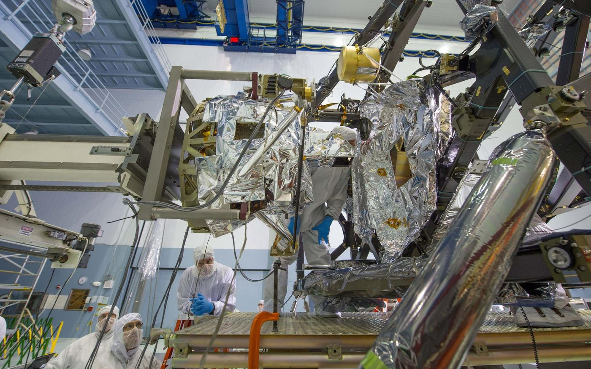
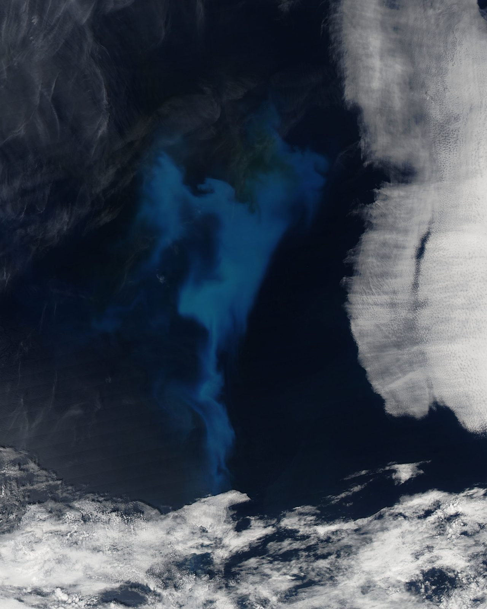

The science and engineering behind the mission.
SSAI delivers mission-critical science, engineering, and technology to the agencies that explore, observe, and defend. For more than four decades, we have turned complex science into systems that perform when the mission cannot fail, from NASA and NOAA to defense and national security.
We turn science into mission advantage.
We deliver mission-critical science, engineering, and technology across five connected capability areas, serving the scientists, operators, and warfighters who explore, observe, and defend. From the instruments that observe our planet to the secure systems that defend the nation, we engineer the work to perform when the mission cannot fail.
The discipline trusted on NASA's flagship missions now serves defense and national security. One organization, end to end, with the credentials and clearances to operate where the mission matters most.
Science, Technology & Engineering Services
We engineer the systems flagship missions depend on, from NASA to defense.
Space Operations
We operate the deep-space instruments and round-the-clock models that keep NOAA and NASA missions running.
Satellite & Space Systems Manufacturing
We build flight-ready hardware end to end, under two miles from NASA Goddard.
Environmental Intelligence
We turn raw observations into intelligence that informs the decisions that matter.
Cybersecurity & Digital Defense
We secure the mission with zero-trust architectures, AI/ML, and the CREST digital-twin framework.
Six markets, one source
We serve the agencies and partners who lead, serve, and protect, from defense and the intelligence community to civilian agencies and international partners, all through a single trusted organization.
We engineer the instruments that cannot fail.
We carry spaceflight hardware and software from requirements through verification, holding the workmanship standards and quality systems that flagship missions demand, so the instruments work the first time, on missions that cannot fail.
We are trusted on OCI/PACE, Roman Space Telescope, Lucy, Mars Sample Return and the Capture, Containment and Return System, Dragonfly, GeoXO, DAVINCI+, TSIS-2, and JWST. The same discipline now serves defense and national security programs.
- Systems engineering with requirements definition, verification and validation
- Avionics & FPGA design and software engineering at CMMI Level 3
- EEE parts processing and J-STD-001F certified workmanship
- System integration & testing and manufacturing engineering
- AS9100 & ITAR quality and compliance across every build

NASA / Goddard Space Flight CenterWe keep the mission running, around the clock.
We operate the models and instruments that keep national missions running, serving the forecasters and operators who depend on them, from millions of daily observations to spacecraft on orbit.
We operate NASA's GEOS Data Assimilation System, ingesting millions of observations daily, and deliver 24/7 operational modeling for NOAA and NASA. In deep space, we develop and calibrate instruments, design trajectories, and model atmospheric entry from pre-launch through on-orbit operations.
Operational assimilation
We run global atmospheric reanalysis and next-generation coupled models around the clock, so the data is ready when the mission needs it.
Instruments & operations
We develop and calibrate instruments, design trajectories, model atmospheric entry, and process, archive, and distribute the data the mission depends on.
 NASA / Goddard Space Flight Center
NASA / Goddard Space Flight Center
We build flight-ready hardware, under two miles from Goddard.
We build flight-ready hardware end to end, pairing an electronics manufacturing facility with a precision machine shop and cleared personnel, engineered to work the first time and every time.
Electronics manufacturing
We deliver PCB design, fabrication and test, FPGA board repair, an ESD-protected floor, and 3 clean rooms, staffed by cleared personnel for sensitive work.
Precision machining
We machine to Mil-I-45208A and Mil-std-45662 with 4 CNC machines plus lathes, presses and mills, 6 certified aerospace machinists, and 7 3D printers.
We turn observations into decisions that matter.
We turn observations from space, air, and ground into intelligence that informs the decisions of the analysts, forecasters, and operators who depend on it, across the geospatial and remote-sensing domain.
We work across data assimilation, remote sensing, oceanography, hydrology, biosphere modeling, and weather and space-weather forecasting, drawing on decades of instrument expertise.
- Atmosphere & composition: OMI, OMPS, TROPOMI, GEMS, EPIC
- Land & ocean imaging: MODIS, VIIRS, MISR, AVIRIS-NG
- Lidar & altimetry: CATS-ISS, CPL, ICESat-2

NASA / Goddard Space Flight CenterWe secure the mission.
We bring advanced IT, cybersecurity, and AI/ML together for national security, anchored by a digital-twin framework built for the mission and designed to hold when it cannot fail.
- Cybersecurity: zero-trust architectures for sensitive environments
- AI/ML: custom AI for digital twins, anomaly detection and cross-agency support
- CREST framework: the Coupled Reusable Earth System Tensor, an AI-enabled Python digital-twin framework
We serve those who explore, observe, and defend.
We deliver across six markets, trusted on the work that matters most, from federal flagship missions to state and local institutions and international partners.
DoD & defense labs
We deliver engineering, manufacturing, and digital defense for the Department of Defense and defense laboratories.
02 Federal CivilianCivilian agencies
We serve NASA (Goddard, Langley), NOAA, USGS, EPA, USDA, GSA, the Department of Commerce, and the Department of the Interior.
03 Intelligence CommunityIC missions
We bring cleared facilities and personnel to the sensitive analytic and engineering work the mission demands.
04 State & LocalPublic institutions
We are trusted by LA World Airports (LAWA) and the LA Unified School District (LAUSD).
05 CommercialIndustry partners
We deliver science and engineering services for commercial organizations operating in the mission space.
06 OCONUS / InternationalGlobal reach
We support international engagements, including work with the World Bank, beyond the continental United States.
One trusted source for the mission.
Three wholly-owned subsidiaries extend SSAI into a single, trusted source for mission-ready capability, from electronics to integration to precision fabrication, engineered to perform when the mission cannot fail.
Advanced Mission Partners
We deliver electronics manufacturing, engineering services, EEE expertise, and precision manufacturing.
Elucidation Concepts, LLC
We deliver cybersecurity solutions, systems engineering, system integration testing, and test and evaluation.
Sigma Engineering and Fabrication, Inc.
We deliver precision machining, manufacturing, material expertise, and quality the mission can trust.
We turn science into mission advantage.
The discipline trusted on NASA's flagship missions now serves defense and national security. See how to work with SSAI.